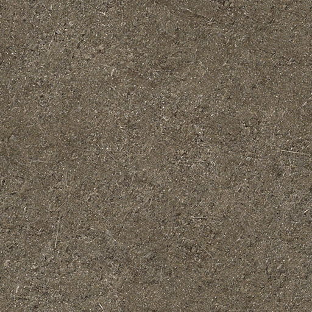
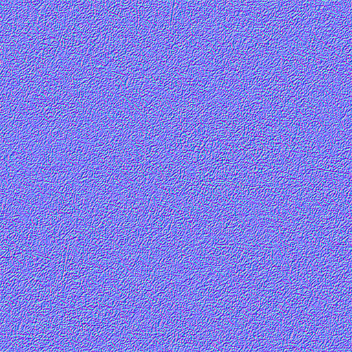
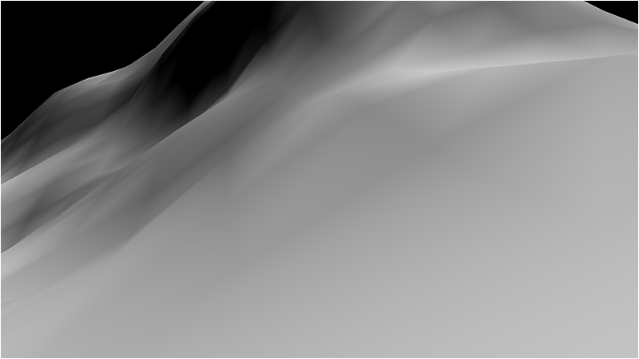
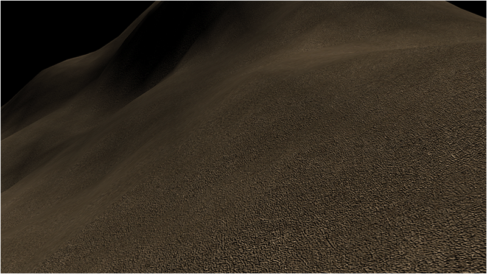

This tutorial will cover terrain normal mapping in DirectX 11 using HLSL and C++.
One of the ways to add a degree of realism to height map generated terrain is to use normal mapping.
Normal mapping allows us to light the terrain per pixel instead of per triangle.
We get the per pixel lighting information from normal maps.
Each pixel in the normal map contains the information needed to calculate the unique lighting normal for that pixel.
To perform normal mapping calculations the tangent and binormal for each triangle on the terrain also needs to be calculated, we will go over the math to do that.
And finally we will need a normal map for the dirt texture that we have been using.
For this tutorial we will use the following diffuse and normal texture:


Now when we review our current lighting for the terrain we have shared normals giving a smooth transition of light over each triangle which looks like the following:

However if we apply a normal map to each of those triangles we can achieve highly detailed lighting that simulates detailed geometry on each triangle:
And when we reapply our diffuse texture and color map we have the appearance of a rough, detailed surface (whereas before we had completely smooth surfaces):

Terrainclass.h
////////////////////////////////////////////////////////////////////////////////
// Filename: terrainclass.h
////////////////////////////////////////////////////////////////////////////////
#ifndef _TERRAINCLASS_H_
#define _TERRAINCLASS_H_
//////////////
// INCLUDES //
//////////////
#include <d3d11.h>
#include <directxmath.h>
#include <fstream>
#include <stdio.h>
using namespace DirectX;
using namespace std;
////////////////////////////////////////////////////////////////////////////////
// Class name: TerrainClass
////////////////////////////////////////////////////////////////////////////////
class TerrainClass
{
private:
The VertexType and ModelType structures have been updated to include a tangent and binormal vector.
struct VertexType
{
XMFLOAT3 position;
XMFLOAT2 texture;
XMFLOAT3 normal;
XMFLOAT3 tangent;
XMFLOAT3 binormal;
XMFLOAT3 color;
};
struct HeightMapType
{
float x, y, z;
float nx, ny, nz;
float r, g, b;
};
struct ModelType
{
float x, y, z;
float tu, tv;
float nx, ny, nz;
float tx, ty, tz;
float bx, by, bz;
float r, g, b;
};
struct VectorType
{
float x, y, z;
};
We have added a new structure called TempVertexType to assist in calculating the tangent and binormal vectors.
struct TempVertexType
{
float x, y, z;
float tu, tv;
float nx, ny, nz;
};
public:
TerrainClass();
TerrainClass(const TerrainClass&);
~TerrainClass();
bool Initialize(ID3D11Device*, char*);
void Shutdown();
bool Render(ID3D11DeviceContext*);
int GetIndexCount();
private:
bool LoadSetupFile(char*);
bool LoadBitmapHeightMap();
void ShutdownHeightMap();
void SetTerrainCoordinates();
bool CalculateNormals();
bool LoadColorMap();
bool BuildTerrainModel();
void ShutdownTerrainModel();
There following two new functions are used for calculating the tangent and binormal for the terrain model.
void CalculateTerrainVectors();
void CalculateTangentBinormal(TempVertexType, TempVertexType, TempVertexType, VectorType&, VectorType&);
bool InitializeBuffers(ID3D11Device*);
void ShutdownBuffers();
void RenderBuffers(ID3D11DeviceContext*);
private:
ID3D11Buffer *m_vertexBuffer, *m_indexBuffer;
int m_vertexCount, m_indexCount;
int m_terrainHeight, m_terrainWidth;
float m_heightScale;
char *m_terrainFilename, *m_colorMapFilename;
HeightMapType* m_heightMap;
ModelType* m_terrainModel;
};
#endif
Terrainclass.cpp
////////////////////////////////////////////////////////////////////////////////
// Filename: terrainclass.cpp
////////////////////////////////////////////////////////////////////////////////
#include "terrainclass.h"
TerrainClass::TerrainClass()
{
m_vertexBuffer = 0;
m_indexBuffer = 0;
m_terrainFilename = 0;
m_colorMapFilename = 0;
m_heightMap = 0;
m_terrainModel = 0;
}
TerrainClass::TerrainClass(const TerrainClass& other)
{
}
TerrainClass::~TerrainClass()
{
}
bool TerrainClass::Initialize(ID3D11Device* device, char* setupFilename)
{
bool result;
// Get the terrain filename, dimensions, and so forth from the setup file.
result = LoadSetupFile(setupFilename);
if(!result)
{
return false;
}
// Initialize the terrain height map with the data from the bitmap file.
result = LoadBitmapHeightMap();
if(!result)
{
return false;
}
// Setup the X and Z coordinates for the height map as well as scale the terrain height by the height scale value.
SetTerrainCoordinates();
// Calculate the normals for the terrain data.
result = CalculateNormals();
if(!result)
{
return false;
}
// Load in the color map for the terrain.
result = LoadColorMap();
if(!result)
{
return false;
}
// Now build the 3D model of the terrain.
result = BuildTerrainModel();
if(!result)
{
return false;
}
// We can now release the height map since it is no longer needed in memory once the 3D terrain model has been built.
ShutdownHeightMap();
Once the terrain model is built we can then go through the model and calculate the tangent and binormal for each triangle in the model.
// Calculate the tangent and binormal for the terrain model.
CalculateTerrainVectors();
// Load the rendering buffers with the terrain data.
result = InitializeBuffers(device);
if(!result)
{
return false;
}
// Release the terrain model now that the rendering buffers have been loaded.
ShutdownTerrainModel();
return true;
}
void TerrainClass::Shutdown()
{
// Release the rendering buffers.
ShutdownBuffers();
// Release the terrain model.
ShutdownTerrainModel();
// Release the height map.
ShutdownHeightMap();
return;
}
bool TerrainClass::Render(ID3D11DeviceContext* deviceContext)
{
// Put the vertex and index buffers on the graphics pipeline to prepare them for drawing.
RenderBuffers(deviceContext);
return true;
}
int TerrainClass::GetIndexCount()
{
return m_indexCount;
}
bool TerrainClass::LoadSetupFile(char* filename)
{
int stringLength;
ifstream fin;
char input;
// Initialize the strings that will hold the terrain file name and the color map file name.
stringLength = 256;
m_terrainFilename = new char[stringLength];
if(!m_terrainFilename)
{
return false;
}
m_colorMapFilename = new char[stringLength];
if(!m_colorMapFilename)
{
return false;
}
// Open the setup file. If it could not open the file then exit.
fin.open(filename);
if(fin.fail())
{
return false;
}
// Read up to the terrain file name.
fin.get(input);
while(input != ':')
{
fin.get(input);
}
// Read in the terrain file name.
fin >> m_terrainFilename;
// Read up to the value of terrain height.
fin.get(input);
while(input != ':')
{
fin.get(input);
}
// Read in the terrain height.
fin >> m_terrainHeight;
// Read up to the value of terrain width.
fin.get(input);
while (input != ':')
{
fin.get(input);
}
// Read in the terrain width.
fin >> m_terrainWidth;
// Read up to the value of terrain height scaling.
fin.get(input);
while (input != ':')
{
fin.get(input);
}
// Read in the terrain height scaling.
fin >> m_heightScale;
// Read up to the color map file name.
fin.get(input);
while(input != ':')
{
fin.get(input);
}
// Read in the color map file name.
fin >> m_colorMapFilename;
// Close the setup file.
fin.close();
return true;
}
bool TerrainClass::LoadBitmapHeightMap()
{
int error, imageSize, i, j, k, index;
FILE* filePtr;
unsigned long long count;
BITMAPFILEHEADER bitmapFileHeader;
BITMAPINFOHEADER bitmapInfoHeader;
unsigned char* bitmapImage;
unsigned char height;
// Start by creating the array structure to hold the height map data.
m_heightMap = new HeightMapType[m_terrainWidth * m_terrainHeight];
if(!m_heightMap)
{
return false;
}
// Open the bitmap map file in binary.
error = fopen_s(&filePtr, m_terrainFilename, "rb");
if(error != 0)
{
return false;
}
// Read in the bitmap file header.
count = fread(&bitmapFileHeader, sizeof(BITMAPFILEHEADER), 1, filePtr);
if(count != 1)
{
return false;
}
// Read in the bitmap info header.
count = fread(&bitmapInfoHeader, sizeof(BITMAPINFOHEADER), 1, filePtr);
if(count != 1)
{
return false;
}
// Make sure the height map dimensions are the same as the terrain dimensions for easy 1 to 1 mapping.
if((bitmapInfoHeader.biHeight != m_terrainHeight) || (bitmapInfoHeader.biWidth != m_terrainWidth))
{
return false;
}
// Calculate the size of the bitmap image data.
// Since we use non-divide by 2 dimensions (eg. 513x513) we need to add an extra byte to each line.
imageSize = m_terrainHeight * ((m_terrainWidth * 3) + 1);
// Allocate memory for the bitmap image data.
bitmapImage = new unsigned char[imageSize];
if(!bitmapImage)
{
return false;
}
// Move to the beginning of the bitmap data.
fseek(filePtr, bitmapFileHeader.bfOffBits, SEEK_SET);
// Read in the bitmap image data.
count = fread(bitmapImage, 1, imageSize, filePtr);
if(count != imageSize)
{
return false;
}
// Close the file.
error = fclose(filePtr);
if(error != 0)
{
return false;
}
// Initialize the position in the image data buffer.
k=0;
// Read the image data into the height map array.
for(j=0; j<m_terrainHeight; j++)
{
for(i=0; i<m_terrainWidth; i++)
{
// Bitmaps are upside down so load bottom to top into the height map array.
index = (m_terrainWidth * (m_terrainHeight - 1 - j)) + i;
// Get the grey scale pixel value from the bitmap image data at this location.
height = bitmapImage[k];
// Store the pixel value as the height at this point in the height map array.
m_heightMap[index].y = (float)height;
// Increment the bitmap image data index.
k+=3;
}
// Compensate for the extra byte at end of each line in non-divide by 2 bitmaps (eg. 513x513).
k++;
}
// Release the bitmap image data now that the height map array has been loaded.
delete [] bitmapImage;
bitmapImage = 0;
// Release the terrain filename now that is has been read in.
delete [] m_terrainFilename;
m_terrainFilename = 0;
return true;
}
void TerrainClass::ShutdownHeightMap()
{
// Release the height map array.
if(m_heightMap)
{
delete [] m_heightMap;
m_heightMap = 0;
}
return;
}
void TerrainClass::SetTerrainCoordinates()
{
int i, j, index;
// Loop through all the elements in the height map array and adjust their coordinates correctly.
for(j=0; j<m_terrainHeight; j++)
{
for(i=0; i<m_terrainWidth; i++)
{
index = (m_terrainWidth * j) + i;
// Set the X and Z coordinates.
m_heightMap[index].x = (float)i;
m_heightMap[index].z = -(float)j;
// Move the terrain depth into the positive range. For example from (0, -256) to (256, 0).
m_heightMap[index].z += (float)(m_terrainHeight - 1);
// Scale the height.
m_heightMap[index].y /= m_heightScale;
}
}
return;
}
bool TerrainClass::CalculateNormals()
{
int i, j, index1, index2, index3, index;
float vertex1[3], vertex2[3], vertex3[3], vector1[3], vector2[3], sum[3], length;
VectorType* normals;
// Create a temporary array to hold the face normal vectors.
normals = new VectorType[(m_terrainHeight-1) * (m_terrainWidth-1)];
if(!normals)
{
return false;
}
// Go through all the faces in the mesh and calculate their normals.
for(j=0; j<(m_terrainHeight-1); j++)
{
for(i=0; i<(m_terrainWidth-1); i++)
{
index1 = ((j+1) * m_terrainWidth) + i; // Bottom left vertex.
index2 = ((j+1) * m_terrainWidth) + (i+1); // Bottom right vertex.
index3 = (j * m_terrainWidth) + i; // Upper left vertex.
// Get three vertices from the face.
vertex1[0] = m_heightMap[index1].x;
vertex1[1] = m_heightMap[index1].y;
vertex1[2] = m_heightMap[index1].z;
vertex2[0] = m_heightMap[index2].x;
vertex2[1] = m_heightMap[index2].y;
vertex2[2] = m_heightMap[index2].z;
vertex3[0] = m_heightMap[index3].x;
vertex3[1] = m_heightMap[index3].y;
vertex3[2] = m_heightMap[index3].z;
// Calculate the two vectors for this face.
vector1[0] = vertex1[0] - vertex3[0];
vector1[1] = vertex1[1] - vertex3[1];
vector1[2] = vertex1[2] - vertex3[2];
vector2[0] = vertex3[0] - vertex2[0];
vector2[1] = vertex3[1] - vertex2[1];
vector2[2] = vertex3[2] - vertex2[2];
index = (j * (m_terrainWidth - 1)) + i;
// Calculate the cross product of those two vectors to get the un-normalized value for this face normal.
normals[index].x = (vector1[1] * vector2[2]) - (vector1[2] * vector2[1]);
normals[index].y = (vector1[2] * vector2[0]) - (vector1[0] * vector2[2]);
normals[index].z = (vector1[0] * vector2[1]) - (vector1[1] * vector2[0]);
// Calculate the length.
length = (float)sqrt((normals[index].x * normals[index].x) + (normals[index].y * normals[index].y) +
(normals[index].z * normals[index].z));
// Normalize the final value for this face using the length.
normals[index].x = (normals[index].x / length);
normals[index].y = (normals[index].y / length);
normals[index].z = (normals[index].z / length);
}
}
// Now go through all the vertices and take a sum of the face normals that touch this vertex.
for(j=0; j<m_terrainHeight; j++)
{
for(i=0; i<m_terrainWidth; i++)
{
// Initialize the sum.
sum[0] = 0.0f;
sum[1] = 0.0f;
sum[2] = 0.0f;
// Bottom left face.
if(((i-1) >= 0) && ((j-1) >= 0))
{
index = ((j-1) * (m_terrainWidth-1)) + (i-1);
sum[0] += normals[index].x;
sum[1] += normals[index].y;
sum[2] += normals[index].z;
}
// Bottom right face.
if((i<(m_terrainWidth-1)) && ((j-1) >= 0))
{
index = ((j - 1) * (m_terrainWidth - 1)) + i;
sum[0] += normals[index].x;
sum[1] += normals[index].y;
sum[2] += normals[index].z;
}
// Upper left face.
if(((i-1) >= 0) && (j<(m_terrainHeight-1)))
{
index = (j * (m_terrainWidth-1)) + (i-1);
sum[0] += normals[index].x;
sum[1] += normals[index].y;
sum[2] += normals[index].z;
}
// Upper right face.
if((i < (m_terrainWidth-1)) && (j < (m_terrainHeight-1)))
{
index = (j * (m_terrainWidth-1)) + i;
sum[0] += normals[index].x;
sum[1] += normals[index].y;
sum[2] += normals[index].z;
}
// Calculate the length of this normal.
length = (float)sqrt((sum[0] * sum[0]) + (sum[1] * sum[1]) + (sum[2] * sum[2]));
// Get an index to the vertex location in the height map array.
index = (j * m_terrainWidth) + i;
// Normalize the final shared normal for this vertex and store it in the height map array.
m_heightMap[index].nx = (sum[0] / length);
m_heightMap[index].ny = (sum[1] / length);
m_heightMap[index].nz = (sum[2] / length);
}
}
// Release the temporary normals.
delete [] normals;
normals = 0;
return true;
}
bool TerrainClass::LoadColorMap()
{
int error, imageSize, i, j, k, index;
FILE* filePtr;
unsigned long long count;
BITMAPFILEHEADER bitmapFileHeader;
BITMAPINFOHEADER bitmapInfoHeader;
unsigned char* bitmapImage;
// Open the color map file in binary.
error = fopen_s(&filePtr, m_colorMapFilename, "rb");
if(error != 0)
{
return false;
}
// Read in the file header.
count = fread(&bitmapFileHeader, sizeof(BITMAPFILEHEADER), 1, filePtr);
if(count != 1)
{
return false;
}
// Read in the bitmap info header.
count = fread(&bitmapInfoHeader, sizeof(BITMAPINFOHEADER), 1, filePtr);
if(count != 1)
{
return false;
}
// Make sure the color map dimensions are the same as the terrain dimensions for easy 1 to 1 mapping.
if((bitmapInfoHeader.biWidth != m_terrainWidth) || (bitmapInfoHeader.biHeight != m_terrainHeight))
{
return false;
}
// Calculate the size of the bitmap image data.
// Since this is non-divide by 2 dimensions (eg. 257x257) need to add extra byte to each line.
imageSize = m_terrainHeight * ((m_terrainWidth * 3) + 1);
// Allocate memory for the bitmap image data.
bitmapImage = new unsigned char[imageSize];
if(!bitmapImage)
{
return false;
}
// Move to the beginning of the bitmap data.
fseek(filePtr, bitmapFileHeader.bfOffBits, SEEK_SET);
// Read in the bitmap image data.
count = fread(bitmapImage, 1, imageSize, filePtr);
if(count != imageSize)
{
return false;
}
// Close the file.
error = fclose(filePtr);
if(error != 0)
{
return false;
}
// Initialize the position in the image data buffer.
k=0;
// Read the image data into the color map portion of the height map structure.
for(j=0; j<m_terrainHeight; j++)
{
for(i=0; i<m_terrainWidth; i++)
{
// Bitmaps are upside down so load bottom to top into the array.
index = (m_terrainWidth * (m_terrainHeight - 1 - j)) + i;
m_heightMap[index].b = (float)bitmapImage[k] / 255.0f;
m_heightMap[index].g = (float)bitmapImage[k + 1] / 255.0f;
m_heightMap[index].r = (float)bitmapImage[k + 2] / 255.0f;
k += 3;
}
// Compensate for extra byte at end of each line in non-divide by 2 bitmaps (eg. 257x257).
k++;
}
// Release the bitmap image data.
delete [] bitmapImage;
bitmapImage = 0;
// Release the color map filename now that is has been read in.
delete [] m_colorMapFilename;
m_colorMapFilename = 0;
return true;
}
bool TerrainClass::BuildTerrainModel()
{
int i, j, index, index1, index2, index3, index4;
// Calculate the number of vertices in the 3D terrain model.
m_vertexCount = (m_terrainHeight - 1) * (m_terrainWidth - 1) * 6;
// Create the 3D terrain model array.
m_terrainModel = new ModelType[m_vertexCount];
if(!m_terrainModel)
{
return false;
}
// Initialize the index into the height map array.
index = 0;
// Load the 3D terrain model with the height map terrain data.
// We will be creating 2 triangles for each of the four points in a quad.
for(j=0; j<(m_terrainHeight-1); j++)
{
for(i=0; i<(m_terrainWidth-1); i++)
{
// Get the indexes to the four points of the quad.
index1 = (m_terrainWidth * j) + i; // Upper left.
index2 = (m_terrainWidth * j) + (i+1); // Upper right.
index3 = (m_terrainWidth * (j+1)) + i; // Bottom left.
index4 = (m_terrainWidth * (j+1)) + (i+1); // Bottom right.
// Now create two triangles for that quad.
// Triangle 1 - Upper left.
m_terrainModel[index].x = m_heightMap[index1].x;
m_terrainModel[index].y = m_heightMap[index1].y;
m_terrainModel[index].z = m_heightMap[index1].z;
m_terrainModel[index].tu = 0.0f;
m_terrainModel[index].tv = 0.0f;
m_terrainModel[index].nx = m_heightMap[index1].nx;
m_terrainModel[index].ny = m_heightMap[index1].ny;
m_terrainModel[index].nz = m_heightMap[index1].nz;
m_terrainModel[index].r = m_heightMap[index1].r;
m_terrainModel[index].g = m_heightMap[index1].g;
m_terrainModel[index].b = m_heightMap[index1].b;
index++;
// Triangle 1 - Upper right.
m_terrainModel[index].x = m_heightMap[index2].x;
m_terrainModel[index].y = m_heightMap[index2].y;
m_terrainModel[index].z = m_heightMap[index2].z;
m_terrainModel[index].tu = 1.0f;
m_terrainModel[index].tv = 0.0f;
m_terrainModel[index].nx = m_heightMap[index2].nx;
m_terrainModel[index].ny = m_heightMap[index2].ny;
m_terrainModel[index].nz = m_heightMap[index2].nz;
m_terrainModel[index].r = m_heightMap[index2].r;
m_terrainModel[index].g = m_heightMap[index2].g;
m_terrainModel[index].b = m_heightMap[index2].b;
index++;
// Triangle 1 - Bottom left.
m_terrainModel[index].x = m_heightMap[index3].x;
m_terrainModel[index].y = m_heightMap[index3].y;
m_terrainModel[index].z = m_heightMap[index3].z;
m_terrainModel[index].tu = 0.0f;
m_terrainModel[index].tv = 1.0f;
m_terrainModel[index].nx = m_heightMap[index3].nx;
m_terrainModel[index].ny = m_heightMap[index3].ny;
m_terrainModel[index].nz = m_heightMap[index3].nz;
m_terrainModel[index].r = m_heightMap[index3].r;
m_terrainModel[index].g = m_heightMap[index3].g;
m_terrainModel[index].b = m_heightMap[index3].b;
index++;
// Triangle 2 - Bottom left.
m_terrainModel[index].x = m_heightMap[index3].x;
m_terrainModel[index].y = m_heightMap[index3].y;
m_terrainModel[index].z = m_heightMap[index3].z;
m_terrainModel[index].tu = 0.0f;
m_terrainModel[index].tv = 1.0f;
m_terrainModel[index].nx = m_heightMap[index3].nx;
m_terrainModel[index].ny = m_heightMap[index3].ny;
m_terrainModel[index].nz = m_heightMap[index3].nz;
m_terrainModel[index].r = m_heightMap[index3].r;
m_terrainModel[index].g = m_heightMap[index3].g;
m_terrainModel[index].b = m_heightMap[index3].b;
index++;
// Triangle 2 - Upper right.
m_terrainModel[index].x = m_heightMap[index2].x;
m_terrainModel[index].y = m_heightMap[index2].y;
m_terrainModel[index].z = m_heightMap[index2].z;
m_terrainModel[index].tu = 1.0f;
m_terrainModel[index].tv = 0.0f;
m_terrainModel[index].nx = m_heightMap[index2].nx;
m_terrainModel[index].ny = m_heightMap[index2].ny;
m_terrainModel[index].nz = m_heightMap[index2].nz;
m_terrainModel[index].r = m_heightMap[index2].r;
m_terrainModel[index].g = m_heightMap[index2].g;
m_terrainModel[index].b = m_heightMap[index2].b;
index++;
// Triangle 2 - Bottom right.
m_terrainModel[index].x = m_heightMap[index4].x;
m_terrainModel[index].y = m_heightMap[index4].y;
m_terrainModel[index].z = m_heightMap[index4].z;
m_terrainModel[index].tu = 1.0f;
m_terrainModel[index].tv = 1.0f;
m_terrainModel[index].nx = m_heightMap[index4].nx;
m_terrainModel[index].ny = m_heightMap[index4].ny;
m_terrainModel[index].nz = m_heightMap[index4].nz;
m_terrainModel[index].r = m_heightMap[index4].r;
m_terrainModel[index].g = m_heightMap[index4].g;
m_terrainModel[index].b = m_heightMap[index4].b;
index++;
}
}
return true;
}
void TerrainClass::ShutdownTerrainModel()
{
// Release the terrain model data.
if(m_terrainModel)
{
delete [] m_terrainModel;
m_terrainModel = 0;
}
return;
}
The CalculateTerrainVectors function is used for traversing through the terrain model and finding the three vertices for each triangle.
Then it takes those three vertices and passes them into the CalculateTangentBinormal function to calculate the tangent and binormal for that triangle.
The tangent and binormal are passed back from the function by reference and then we copy them into the terrain model.
void TerrainClass::CalculateTerrainVectors()
{
int faceCount, i, index;
TempVertexType vertex1, vertex2, vertex3;
VectorType tangent, binormal;
// Calculate the number of faces in the terrain model.
faceCount = m_vertexCount / 3;
// Initialize the index to the model data.
index=0;
// Go through all the faces and calculate the the tangent, binormal, and normal vectors.
for(i=0; i<faceCount; i++)
{
// Get the three vertices for this face from the terrain model.
vertex1.x = m_terrainModel[index].x;
vertex1.y = m_terrainModel[index].y;
vertex1.z = m_terrainModel[index].z;
vertex1.tu = m_terrainModel[index].tu;
vertex1.tv = m_terrainModel[index].tv;
vertex1.nx = m_terrainModel[index].nx;
vertex1.ny = m_terrainModel[index].ny;
vertex1.nz = m_terrainModel[index].nz;
index++;
vertex2.x = m_terrainModel[index].x;
vertex2.y = m_terrainModel[index].y;
vertex2.z = m_terrainModel[index].z;
vertex2.tu = m_terrainModel[index].tu;
vertex2.tv = m_terrainModel[index].tv;
vertex2.nx = m_terrainModel[index].nx;
vertex2.ny = m_terrainModel[index].ny;
vertex2.nz = m_terrainModel[index].nz;
index++;
vertex3.x = m_terrainModel[index].x;
vertex3.y = m_terrainModel[index].y;
vertex3.z = m_terrainModel[index].z;
vertex3.tu = m_terrainModel[index].tu;
vertex3.tv = m_terrainModel[index].tv;
vertex3.nx = m_terrainModel[index].nx;
vertex3.ny = m_terrainModel[index].ny;
vertex3.nz = m_terrainModel[index].nz;
index++;
// Calculate the tangent and binormal of that face.
CalculateTangentBinormal(vertex1, vertex2, vertex3, tangent, binormal);
// Store the tangent and binormal for this face back in the model structure.
m_terrainModel[index-1].tx = tangent.x;
m_terrainModel[index-1].ty = tangent.y;
m_terrainModel[index-1].tz = tangent.z;
m_terrainModel[index-1].bx = binormal.x;
m_terrainModel[index-1].by = binormal.y;
m_terrainModel[index-1].bz = binormal.z;
m_terrainModel[index-2].tx = tangent.x;
m_terrainModel[index-2].ty = tangent.y;
m_terrainModel[index-2].tz = tangent.z;
m_terrainModel[index-2].bx = binormal.x;
m_terrainModel[index-2].by = binormal.y;
m_terrainModel[index-2].bz = binormal.z;
m_terrainModel[index-3].tx = tangent.x;
m_terrainModel[index-3].ty = tangent.y;
m_terrainModel[index-3].tz = tangent.z;
m_terrainModel[index-3].bx = binormal.x;
m_terrainModel[index-3].by = binormal.y;
m_terrainModel[index-3].bz = binormal.z;
}
return;
}
CalculateTangentBinormal calculates the tangent and binormal for a given triangle using the three input vertices.
void TerrainClass::CalculateTangentBinormal(TempVertexType vertex1, TempVertexType vertex2, TempVertexType vertex3, VectorType& tangent, VectorType& binormal)
{
float vector1[3], vector2[3];
float tuVector[2], tvVector[2];
float den;
float length;
// Calculate the two vectors for this face.
vector1[0] = vertex2.x - vertex1.x;
vector1[1] = vertex2.y - vertex1.y;
vector1[2] = vertex2.z - vertex1.z;
vector2[0] = vertex3.x - vertex1.x;
vector2[1] = vertex3.y - vertex1.y;
vector2[2] = vertex3.z - vertex1.z;
// Calculate the tu and tv texture space vectors.
tuVector[0] = vertex2.tu - vertex1.tu;
tvVector[0] = vertex2.tv - vertex1.tv;
tuVector[1] = vertex3.tu - vertex1.tu;
tvVector[1] = vertex3.tv - vertex1.tv;
// Calculate the denominator of the tangent/binormal equation.
den = 1.0f / (tuVector[0] * tvVector[1] - tuVector[1] * tvVector[0]);
// Calculate the cross products and multiply by the coefficient to get the tangent and binormal.
tangent.x = (tvVector[1] * vector1[0] - tvVector[0] * vector2[0]) * den;
tangent.y = (tvVector[1] * vector1[1] - tvVector[0] * vector2[1]) * den;
tangent.z = (tvVector[1] * vector1[2] - tvVector[0] * vector2[2]) * den;
binormal.x = (tuVector[0] * vector2[0] - tuVector[1] * vector1[0]) * den;
binormal.y = (tuVector[0] * vector2[1] - tuVector[1] * vector1[1]) * den;
binormal.z = (tuVector[0] * vector2[2] - tuVector[1] * vector1[2]) * den;
// Calculate the length of the tangent.
length = (float)sqrt((tangent.x * tangent.x) + (tangent.y * tangent.y) + (tangent.z * tangent.z));
// Normalize the tangent and then store it.
tangent.x = tangent.x / length;
tangent.y = tangent.y / length;
tangent.z = tangent.z / length;
// Calculate the length of the binormal.
length = (float)sqrt((binormal.x * binormal.x) + (binormal.y * binormal.y) + (binormal.z * binormal.z));
// Normalize the binormal and then store it.
binormal.x = binormal.x / length;
binormal.y = binormal.y / length;
binormal.z = binormal.z / length;
return;
}
The InitializeBuffers function has been modified to load the tangent and binormal into the vertex buffer from the terrain model.
bool TerrainClass::InitializeBuffers(ID3D11Device* device)
{
VertexType* vertices;
unsigned long* indices;
D3D11_BUFFER_DESC vertexBufferDesc, indexBufferDesc;
D3D11_SUBRESOURCE_DATA vertexData, indexData;
HRESULT result;
int i;
// Calculate the number of vertices in the terrain.
m_vertexCount = (m_terrainWidth - 1) * (m_terrainHeight - 1) * 6;
// Set the index count to the same as the vertex count.
m_indexCount = m_vertexCount;
// Create the vertex array.
vertices = new VertexType[m_vertexCount];
if(!vertices)
{
return false;
}
// Create the index array.
indices = new unsigned long[m_indexCount];
if(!indices)
{
return false;
}
// Load the vertex array and index array with 3D terrain model data.
for(i=0; i<m_vertexCount; i++)
{
vertices[i].position = XMFLOAT3(m_terrainModel[i].x, m_terrainModel[i].y, m_terrainModel[i].z);
vertices[i].texture = XMFLOAT2(m_terrainModel[i].tu, m_terrainModel[i].tv);
vertices[i].normal = XMFLOAT3(m_terrainModel[i].nx, m_terrainModel[i].ny, m_terrainModel[i].nz);
vertices[i].tangent = XMFLOAT3(m_terrainModel[i].tx, m_terrainModel[i].ty, m_terrainModel[i].tz);
vertices[i].binormal = XMFLOAT3(m_terrainModel[i].bx, m_terrainModel[i].by, m_terrainModel[i].bz);
vertices[i].color = XMFLOAT3(m_terrainModel[i].r, m_terrainModel[i].g, m_terrainModel[i].b);
indices[i] = i;
}
// Set up the description of the static vertex buffer.
vertexBufferDesc.Usage = D3D11_USAGE_DEFAULT;
vertexBufferDesc.ByteWidth = sizeof(VertexType) * m_vertexCount;
vertexBufferDesc.BindFlags = D3D11_BIND_VERTEX_BUFFER;
vertexBufferDesc.CPUAccessFlags = 0;
vertexBufferDesc.MiscFlags = 0;
vertexBufferDesc.StructureByteStride = 0;
// Give the subresource structure a pointer to the vertex data.
vertexData.pSysMem = vertices;
vertexData.SysMemPitch = 0;
vertexData.SysMemSlicePitch = 0;
// Now create the vertex buffer.
result = device->CreateBuffer(&vertexBufferDesc, &vertexData, &m_vertexBuffer);
if(FAILED(result))
{
return false;
}
// Set up the description of the static index buffer.
indexBufferDesc.Usage = D3D11_USAGE_DEFAULT;
indexBufferDesc.ByteWidth = sizeof(unsigned long) * m_indexCount;
indexBufferDesc.BindFlags = D3D11_BIND_INDEX_BUFFER;
indexBufferDesc.CPUAccessFlags = 0;
indexBufferDesc.MiscFlags = 0;
indexBufferDesc.StructureByteStride = 0;
// Give the subresource structure a pointer to the index data.
indexData.pSysMem = indices;
indexData.SysMemPitch = 0;
indexData.SysMemSlicePitch = 0;
// Create the index buffer.
result = device->CreateBuffer(&indexBufferDesc, &indexData, &m_indexBuffer);
if(FAILED(result))
{
return false;
}
// Release the arrays now that the buffers have been created and loaded.
delete [] vertices;
vertices = 0;
delete [] indices;
indices = 0;
return true;
}
void TerrainClass::ShutdownBuffers()
{
// Release the index buffer.
if(m_indexBuffer)
{
m_indexBuffer->Release();
m_indexBuffer = 0;
}
// Release the vertex buffer.
if(m_vertexBuffer)
{
m_vertexBuffer->Release();
m_vertexBuffer = 0;
}
return;
}
void TerrainClass::RenderBuffers(ID3D11DeviceContext* deviceContext)
{
unsigned int stride;
unsigned int offset;
// Set vertex buffer stride and offset.
stride = sizeof(VertexType);
offset = 0;
// Set the vertex buffer to active in the input assembler so it can be rendered.
deviceContext->IASetVertexBuffers(0, 1, &m_vertexBuffer, &stride, &offset);
// Set the index buffer to active in the input assembler so it can be rendered.
deviceContext->IASetIndexBuffer(m_indexBuffer, DXGI_FORMAT_R32_UINT, 0);
// Set the type of primitive that should be rendered from this vertex buffer, in this case triangles.
deviceContext->IASetPrimitiveTopology(D3D11_PRIMITIVE_TOPOLOGY_TRIANGLELIST);
return;
}
Terrain.vs
The terrain vertex shader has been modified to include the tangent and binormal in each of the input structures.
And just like the normal we calculate the tangent and binormal against the world matrix and normalize them so they are prepared for use in the pixel shader.
////////////////////////////////////////////////////////////////////////////////
// Filename: terrain.vs
////////////////////////////////////////////////////////////////////////////////
/////////////
// GLOBALS //
/////////////
cbuffer MatrixBuffer
{
matrix worldMatrix;
matrix viewMatrix;
matrix projectionMatrix;
};
//////////////
// TYPEDEFS //
//////////////
struct VertexInputType
{
float4 position : POSITION;
float2 tex : TEXCOORD0;
float3 normal : NORMAL;
float3 tangent : TANGENT;
float3 binormal : BINORMAL;
float3 color : COLOR;
};
struct PixelInputType
{
float4 position : SV_POSITION;
float2 tex : TEXCOORD0;
float3 normal : NORMAL;
float3 tangent : TANGENT;
float3 binormal : BINORMAL;
float4 color : COLOR;
};
////////////////////////////////////////////////////////////////////////////////
// Vertex Shader
////////////////////////////////////////////////////////////////////////////////
PixelInputType TerrainVertexShader(VertexInputType input)
{
PixelInputType output;
// Change the position vector to be 4 units for proper matrix calculations.
input.position.w = 1.0f;
// Calculate the position of the vertex against the world, view, and projection matrices.
output.position = mul(input.position, worldMatrix);
output.position = mul(output.position, viewMatrix);
output.position = mul(output.position, projectionMatrix);
// Store the texture coordinates for the pixel shader.
output.tex = input.tex;
// Calculate the normal vector against the world matrix only and then normalize the final value.
output.normal = mul(input.normal, (float3x3)worldMatrix);
output.normal = normalize(output.normal);
// Calculate the tangent vector against the world matrix only and then normalize the final value.
output.tangent = mul(input.tangent, (float3x3)worldMatrix);
output.tangent = normalize(output.tangent);
// Calculate the binormal vector against the world matrix only and then normalize the final value.
output.binormal = mul(input.binormal, (float3x3)worldMatrix);
output.binormal = normalize(output.binormal);
// Store the input color for the pixel shader to use.
output.color = float4(input.color, 1.0f);
return output;
}
Terrain.ps
We have modified the terrain pixel shader to now use normal map lighting instead of just the normal per triangle type lighting.
We have a new texture for the normal map, and we have new tangent and binormal components in the input structure.
The normal map lighting calculation is now performed to produce the high detailed per-pixel lighting output.
////////////////////////////////////////////////////////////////////////////////
// Filename: terrain.ps
////////////////////////////////////////////////////////////////////////////////
//////////////
// TEXTURES //
//////////////
Texture2D shaderTexture : register(t0);
Texture2D normalTexture : register(t1);
//////////////
// SAMPLERS //
//////////////
SamplerState SampleType : register(s0);
//////////////////////
// CONSTANT BUFFERS //
//////////////////////
cbuffer LightBuffer
{
float4 diffuseColor;
float3 lightDirection;
float padding;
};
//////////////
// TYPEDEFS //
//////////////
struct PixelInputType
{
float4 position : SV_POSITION;
float2 tex : TEXCOORD0;
float3 normal : NORMAL;
float3 tangent : TANGENT;
float3 binormal : BINORMAL;
float4 color : COLOR;
};
////////////////////////////////////////////////////////////////////////////////
// Pixel Shader
////////////////////////////////////////////////////////////////////////////////
float4 TerrainPixelShader(PixelInputType input) : SV_TARGET
{
float4 textureColor;
float3 lightDir;
float4 bumpMap;
float3 bumpNormal;
float lightIntensity;
float4 color;
// Sample the pixel color from the texture using the sampler at this texture coordinate location.
textureColor = shaderTexture.Sample(SampleType, input.tex);
// Combine the color map value into the texture color.
textureColor = saturate(textureColor * input.color * 2.0f);
// Invert the light direction for calculations.
lightDir = -lightDirection;
// Calculate the amount of light on this pixel using the normal map.
bumpMap = normalTexture.Sample(SampleType, input.tex);
bumpMap = (bumpMap * 2.0f) - 1.0f;
bumpNormal = (bumpMap.x * input.tangent) + (bumpMap.y * input.binormal) + (bumpMap.z * input.normal);
bumpNormal = normalize(bumpNormal);
lightIntensity = saturate(dot(bumpNormal, lightDir));
// Determine the final amount of diffuse color based on the diffuse color combined with the light intensity.
color = saturate(diffuseColor * lightIntensity);
// Multiply the texture pixel and the final diffuse color to get the final pixel color result.
color = color * textureColor;
return color;
}
Terrainshaderclass.h
The Render and SetShaderParameters function now take an additional normal map texture as input.
////////////////////////////////////////////////////////////////////////////////
// Filename: terrainshaderclass.h
////////////////////////////////////////////////////////////////////////////////
#ifndef _TERRAINSHADERCLASS_H_
#define _TERRAINSHADERCLASS_H_
//////////////
// INCLUDES //
//////////////
#include <d3d11.h>
#include <d3dcompiler.h>
#include <directxmath.h>
#include <fstream>
using namespace DirectX;
using namespace std;
////////////////////////////////////////////////////////////////////////////////
// Class name: TerrainShaderClass
////////////////////////////////////////////////////////////////////////////////
class TerrainShaderClass
{
private:
struct MatrixBufferType
{
XMMATRIX world;
XMMATRIX view;
XMMATRIX projection;
};
struct LightBufferType
{
XMFLOAT4 diffuseColor;
XMFLOAT3 lightDirection;
float padding;
};
public:
TerrainShaderClass();
TerrainShaderClass(const TerrainShaderClass&);
~TerrainShaderClass();
bool Initialize(ID3D11Device*, HWND);
void Shutdown();
bool Render(ID3D11DeviceContext*, int, XMMATRIX, XMMATRIX, XMMATRIX, ID3D11ShaderResourceView*, ID3D11ShaderResourceView*,
XMFLOAT3, XMFLOAT4);
private:
bool InitializeShader(ID3D11Device*, HWND, WCHAR*, WCHAR*);
void ShutdownShader();
void OutputShaderErrorMessage(ID3D10Blob*, HWND, WCHAR*);
bool SetShaderParameters(ID3D11DeviceContext*, XMMATRIX, XMMATRIX, XMMATRIX, ID3D11ShaderResourceView*, ID3D11ShaderResourceView*,
XMFLOAT3, XMFLOAT4);
void RenderShader(ID3D11DeviceContext*, int);
private:
ID3D11VertexShader* m_vertexShader;
ID3D11PixelShader* m_pixelShader;
ID3D11InputLayout* m_layout;
ID3D11Buffer* m_matrixBuffer;
ID3D11SamplerState* m_sampleState;
ID3D11Buffer* m_lightBuffer;
};
#endif
Terrainshaderclass.cpp
////////////////////////////////////////////////////////////////////////////////
// Filename: terrainshaderclass.cpp
////////////////////////////////////////////////////////////////////////////////
#include "terrainshaderclass.h"
TerrainShaderClass::TerrainShaderClass()
{
m_vertexShader = 0;
m_pixelShader = 0;
m_layout = 0;
m_matrixBuffer = 0;
m_sampleState = 0;
m_lightBuffer = 0;
}
TerrainShaderClass::TerrainShaderClass(const TerrainShaderClass& other)
{
}
TerrainShaderClass::~TerrainShaderClass()
{
}
bool TerrainShaderClass::Initialize(ID3D11Device* device, HWND hwnd)
{
bool result;
// Initialize the vertex and pixel shaders.
result = InitializeShader(device, hwnd, L"../Engine/terrain.vs", L"../Engine/terrain.ps");
if(!result)
{
return false;
}
return true;
}
void TerrainShaderClass::Shutdown()
{
// Shutdown the vertex and pixel shaders as well as the related objects.
ShutdownShader();
return;
}
The Render function has been updated to take a normal map texture as input.
SetShaderParameters then uses that normal map.
bool TerrainShaderClass::Render(ID3D11DeviceContext* deviceContext, int indexCount, XMMATRIX worldMatrix, XMMATRIX viewMatrix,
XMMATRIX projectionMatrix, ID3D11ShaderResourceView* texture, ID3D11ShaderResourceView* normalMap,
XMFLOAT3 lightDirection, XMFLOAT4 diffuseColor)
{
bool result;
// Set the shader parameters that it will use for rendering.
result = SetShaderParameters(deviceContext, worldMatrix, viewMatrix, projectionMatrix, texture, normalMap, lightDirection, diffuseColor);
if(!result)
{
return false;
}
// Now render the prepared buffers with the shader.
RenderShader(deviceContext, indexCount);
return true;
}
The polygon layout in the terrain shader has been updated to include tangent and binormal vector components.
The color index was changed as well to be below the new vectors.
bool TerrainShaderClass::InitializeShader(ID3D11Device* device, HWND hwnd, WCHAR* vsFilename, WCHAR* psFilename)
{
HRESULT result;
ID3D10Blob* errorMessage;
ID3D10Blob* vertexShaderBuffer;
ID3D10Blob* pixelShaderBuffer;
D3D11_INPUT_ELEMENT_DESC polygonLayout[6];
unsigned int numElements;
D3D11_BUFFER_DESC matrixBufferDesc;
D3D11_SAMPLER_DESC samplerDesc;
D3D11_BUFFER_DESC lightBufferDesc;
// Initialize the pointers this function will use to null.
errorMessage = 0;
vertexShaderBuffer = 0;
pixelShaderBuffer = 0;
// Compile the vertex shader code.
result = D3DCompileFromFile(vsFilename, NULL, NULL, "TerrainVertexShader", "vs_5_0", D3D10_SHADER_ENABLE_STRICTNESS, 0,
&vertexShaderBuffer, &errorMessage);
if(FAILED(result))
{
// If the shader failed to compile it should have writen something to the error message.
if(errorMessage)
{
OutputShaderErrorMessage(errorMessage, hwnd, vsFilename);
}
// If there was nothing in the error message then it simply could not find the shader file itself.
else
{
MessageBox(hwnd, vsFilename, L"Missing Shader File", MB_OK);
}
return false;
}
// Compile the pixel shader code.
result = D3DCompileFromFile(psFilename, NULL, NULL, "TerrainPixelShader", "ps_5_0", D3D10_SHADER_ENABLE_STRICTNESS, 0,
&pixelShaderBuffer, &errorMessage);
if(FAILED(result))
{
// If the shader failed to compile it should have writen something to the error message.
if(errorMessage)
{
OutputShaderErrorMessage(errorMessage, hwnd, psFilename);
}
// If there was nothing in the error message then it simply could not find the file itself.
else
{
MessageBox(hwnd, psFilename, L"Missing Shader File", MB_OK);
}
return false;
}
// Create the vertex shader from the buffer.
result = device->CreateVertexShader(vertexShaderBuffer->GetBufferPointer(), vertexShaderBuffer->GetBufferSize(), NULL, &m_vertexShader);
if(FAILED(result))
{
return false;
}
// Create the pixel shader from the buffer.
result = device->CreatePixelShader(pixelShaderBuffer->GetBufferPointer(), pixelShaderBuffer->GetBufferSize(), NULL, &m_pixelShader);
if(FAILED(result))
{
return false;
}
// Create the vertex input layout description.
polygonLayout[0].SemanticName = "POSITION";
polygonLayout[0].SemanticIndex = 0;
polygonLayout[0].Format = DXGI_FORMAT_R32G32B32_FLOAT;
polygonLayout[0].InputSlot = 0;
polygonLayout[0].AlignedByteOffset = 0;
polygonLayout[0].InputSlotClass = D3D11_INPUT_PER_VERTEX_DATA;
polygonLayout[0].InstanceDataStepRate = 0;
polygonLayout[1].SemanticName = "TEXCOORD";
polygonLayout[1].SemanticIndex = 0;
polygonLayout[1].Format = DXGI_FORMAT_R32G32_FLOAT;
polygonLayout[1].InputSlot = 0;
polygonLayout[1].AlignedByteOffset = D3D11_APPEND_ALIGNED_ELEMENT;
polygonLayout[1].InputSlotClass = D3D11_INPUT_PER_VERTEX_DATA;
polygonLayout[1].InstanceDataStepRate = 0;
polygonLayout[2].SemanticName = "NORMAL";
polygonLayout[2].SemanticIndex = 0;
polygonLayout[2].Format = DXGI_FORMAT_R32G32B32_FLOAT;
polygonLayout[2].InputSlot = 0;
polygonLayout[2].AlignedByteOffset = D3D11_APPEND_ALIGNED_ELEMENT;
polygonLayout[2].InputSlotClass = D3D11_INPUT_PER_VERTEX_DATA;
polygonLayout[2].InstanceDataStepRate = 0;
polygonLayout[3].SemanticName = "TANGENT";
polygonLayout[3].SemanticIndex = 0;
polygonLayout[3].Format = DXGI_FORMAT_R32G32B32_FLOAT;
polygonLayout[3].InputSlot = 0;
polygonLayout[3].AlignedByteOffset = D3D11_APPEND_ALIGNED_ELEMENT;
polygonLayout[3].InputSlotClass = D3D11_INPUT_PER_VERTEX_DATA;
polygonLayout[3].InstanceDataStepRate = 0;
polygonLayout[4].SemanticName = "BINORMAL";
polygonLayout[4].SemanticIndex = 0;
polygonLayout[4].Format = DXGI_FORMAT_R32G32B32_FLOAT;
polygonLayout[4].InputSlot = 0;
polygonLayout[4].AlignedByteOffset = D3D11_APPEND_ALIGNED_ELEMENT;
polygonLayout[4].InputSlotClass = D3D11_INPUT_PER_VERTEX_DATA;
polygonLayout[4].InstanceDataStepRate = 0;
polygonLayout[5].SemanticName = "COLOR";
polygonLayout[5].SemanticIndex = 0;
polygonLayout[5].Format = DXGI_FORMAT_R32G32B32_FLOAT;
polygonLayout[5].InputSlot = 0;
polygonLayout[5].AlignedByteOffset = D3D11_APPEND_ALIGNED_ELEMENT;
polygonLayout[5].InputSlotClass = D3D11_INPUT_PER_VERTEX_DATA;
polygonLayout[5].InstanceDataStepRate = 0;
// Get a count of the elements in the layout.
numElements = sizeof(polygonLayout) / sizeof(polygonLayout[0]);
// Create the vertex input layout.
result = device->CreateInputLayout(polygonLayout, numElements, vertexShaderBuffer->GetBufferPointer(),
vertexShaderBuffer->GetBufferSize(), &m_layout);
if(FAILED(result))
{
return false;
}
// Release the vertex shader buffer and pixel shader buffer since they are no longer needed.
vertexShaderBuffer->Release();
vertexShaderBuffer = 0;
pixelShaderBuffer->Release();
pixelShaderBuffer = 0;
// Setup the description of the dynamic matrix constant buffer that is in the vertex shader.
matrixBufferDesc.Usage = D3D11_USAGE_DYNAMIC;
matrixBufferDesc.ByteWidth = sizeof(MatrixBufferType);
matrixBufferDesc.BindFlags = D3D11_BIND_CONSTANT_BUFFER;
matrixBufferDesc.CPUAccessFlags = D3D11_CPU_ACCESS_WRITE;
matrixBufferDesc.MiscFlags = 0;
matrixBufferDesc.StructureByteStride = 0;
// Create the constant buffer pointer so we can access the vertex shader constant buffer from within this class.
result = device->CreateBuffer(&matrixBufferDesc, NULL, &m_matrixBuffer);
if(FAILED(result))
{
return false;
}
// Create a texture sampler state description.
samplerDesc.Filter = D3D11_FILTER_MIN_MAG_MIP_LINEAR;
samplerDesc.AddressU = D3D11_TEXTURE_ADDRESS_CLAMP;
samplerDesc.AddressV = D3D11_TEXTURE_ADDRESS_CLAMP;
samplerDesc.AddressW = D3D11_TEXTURE_ADDRESS_CLAMP;
samplerDesc.MipLODBias = 0.0f;
samplerDesc.MaxAnisotropy = 1;
samplerDesc.ComparisonFunc = D3D11_COMPARISON_ALWAYS;
samplerDesc.BorderColor[0] = 0;
samplerDesc.BorderColor[1] = 0;
samplerDesc.BorderColor[2] = 0;
samplerDesc.BorderColor[3] = 0;
samplerDesc.MinLOD = 0;
samplerDesc.MaxLOD = D3D11_FLOAT32_MAX;
// Create the texture sampler state.
result = device->CreateSamplerState(&samplerDesc, &m_sampleState);
if(FAILED(result))
{
return false;
}
// Setup the description of the light dynamic constant buffer that is in the pixel shader.
lightBufferDesc.Usage = D3D11_USAGE_DYNAMIC;
lightBufferDesc.ByteWidth = sizeof(LightBufferType);
lightBufferDesc.BindFlags = D3D11_BIND_CONSTANT_BUFFER;
lightBufferDesc.CPUAccessFlags = D3D11_CPU_ACCESS_WRITE;
lightBufferDesc.MiscFlags = 0;
lightBufferDesc.StructureByteStride = 0;
// Create the constant buffer pointer so we can access the pixel shader constant buffer from within this class.
result = device->CreateBuffer(&lightBufferDesc, NULL, &m_lightBuffer);
if(FAILED(result))
{
return false;
}
return true;
}
void TerrainShaderClass::ShutdownShader()
{
// Release the light constant buffer.
if(m_lightBuffer)
{
m_lightBuffer->Release();
m_lightBuffer = 0;
}
// Release the sampler state.
if(m_sampleState)
{
m_sampleState->Release();
m_sampleState = 0;
}
// Release the matrix constant buffer.
if(m_matrixBuffer)
{
m_matrixBuffer->Release();
m_matrixBuffer = 0;
}
// Release the layout.
if(m_layout)
{
m_layout->Release();
m_layout = 0;
}
// Release the pixel shader.
if(m_pixelShader)
{
m_pixelShader->Release();
m_pixelShader = 0;
}
// Release the vertex shader.
if(m_vertexShader)
{
m_vertexShader->Release();
m_vertexShader = 0;
}
return;
}
void TerrainShaderClass::OutputShaderErrorMessage(ID3D10Blob* errorMessage, HWND hwnd, WCHAR* shaderFilename)
{
char* compileErrors;
unsigned long long bufferSize, i;
ofstream fout;
// Get a pointer to the error message text buffer.
compileErrors = (char*)(errorMessage->GetBufferPointer());
// Get the length of the message.
bufferSize = errorMessage->GetBufferSize();
// Open a file to write the error message to.
fout.open("shader-error.txt");
// Write out the error message.
for(i=0; i<bufferSize; i++)
{
fout << compileErrors[i];
}
// Close the file.
fout.close();
// Release the error message.
errorMessage->Release();
errorMessage = 0;
// Pop a message up on the screen to notify the user to check the text file for compile errors.
MessageBox(hwnd, L"Error compiling shader. Check shader-error.txt for message.", shaderFilename, MB_OK);
return;
}
SetShaderParameters has been updated to take a normal map texture as input.
The normal map texture is then set in the pixel shader using this function.
bool TerrainShaderClass::SetShaderParameters(ID3D11DeviceContext* deviceContext, XMMATRIX worldMatrix, XMMATRIX viewMatrix,
XMMATRIX projectionMatrix, ID3D11ShaderResourceView* texture, ID3D11ShaderResourceView* normalMap,
XMFLOAT3 lightDirection, XMFLOAT4 diffuseColor)
{
HRESULT result;
D3D11_MAPPED_SUBRESOURCE mappedResource;
MatrixBufferType* dataPtr;
unsigned int bufferNumber;
LightBufferType* dataPtr2;
// Transpose the matrices to prepare them for the shader.
worldMatrix = XMMatrixTranspose(worldMatrix);
viewMatrix = XMMatrixTranspose(viewMatrix);
projectionMatrix = XMMatrixTranspose(projectionMatrix);
// Lock the constant buffer so it can be written to.
result = deviceContext->Map(m_matrixBuffer, 0, D3D11_MAP_WRITE_DISCARD, 0, &mappedResource);
if(FAILED(result))
{
return false;
}
// Get a pointer to the data in the constant buffer.
dataPtr = (MatrixBufferType*)mappedResource.pData;
// Copy the matrices into the constant buffer.
dataPtr->world = worldMatrix;
dataPtr->view = viewMatrix;
dataPtr->projection = projectionMatrix;
// Unlock the constant buffer.
deviceContext->Unmap(m_matrixBuffer, 0);
// Set the position of the constant buffer in the vertex shader.
bufferNumber = 0;
// Finanly set the constant buffer in the vertex shader with the updated values.
deviceContext->VSSetConstantBuffers(bufferNumber, 1, &m_matrixBuffer);
// Set shader texture resources in the pixel shader.
deviceContext->PSSetShaderResources(0, 1, &texture);
deviceContext->PSSetShaderResources(1, 1, &normalMap);
// Lock the light constant buffer so it can be written to.
result = deviceContext->Map(m_lightBuffer, 0, D3D11_MAP_WRITE_DISCARD, 0, &mappedResource);
if(FAILED(result))
{
return false;
}
// Get a pointer to the data in the light constant buffer.
dataPtr2 = (LightBufferType*)mappedResource.pData;
// Copy the lighting variables into the constant buffer.
dataPtr2->diffuseColor = diffuseColor;
dataPtr2->lightDirection = lightDirection;
dataPtr2->padding = 0.0f;
// Unlock the light constant buffer.
deviceContext->Unmap(m_lightBuffer, 0);
// Set the position of the light constant buffer in the pixel shader.
bufferNumber = 0;
// Finally set the light constant buffer in the pixel shader with the updated values.
deviceContext->PSSetConstantBuffers(bufferNumber, 1, &m_lightBuffer);
return true;
}
void TerrainShaderClass::RenderShader(ID3D11DeviceContext* deviceContext, int indexCount)
{
// Set the vertex input layout.
deviceContext->IASetInputLayout(m_layout);
// Set the vertex and pixel shaders that will be used to render.
deviceContext->VSSetShader(m_vertexShader, NULL, 0);
deviceContext->PSSetShader(m_pixelShader, NULL, 0);
// Set the sampler state in the pixel shader.
deviceContext->PSSetSamplers(0, 1, &m_sampleState);
// Render the polygon data.
deviceContext->DrawIndexed(indexCount, 0, 0);
return;
}
Shadermanagerclass.h
////////////////////////////////////////////////////////////////////////////////
// Filename: shadermanagerclass.h
////////////////////////////////////////////////////////////////////////////////
#ifndef _SHADERMANAGERCLASS_H_
#define _SHADERMANAGERCLASS_H_
///////////////////////
// MY CLASS INCLUDES //
///////////////////////
#include "d3dclass.h"
#include "colorshaderclass.h"
#include "textureshaderclass.h"
#include "lightshaderclass.h"
#include "fontshaderclass.h"
#include "terrainshaderclass.h"
////////////////////////////////////////////////////////////////////////////////
// Class name: ShaderManagerClass
////////////////////////////////////////////////////////////////////////////////
class ShaderManagerClass
{
public:
ShaderManagerClass();
ShaderManagerClass(const ShaderManagerClass&);
~ShaderManagerClass();
bool Initialize(ID3D11Device*, HWND);
void Shutdown();
bool RenderColorShader(ID3D11DeviceContext*, int, XMMATRIX, XMMATRIX, XMMATRIX);
bool RenderTextureShader(ID3D11DeviceContext*, int, XMMATRIX, XMMATRIX, XMMATRIX, ID3D11ShaderResourceView*);
bool RenderLightShader(ID3D11DeviceContext*, int, XMMATRIX, XMMATRIX, XMMATRIX, ID3D11ShaderResourceView*, XMFLOAT3, XMFLOAT4);
bool RenderFontShader(ID3D11DeviceContext*, int, XMMATRIX, XMMATRIX, XMMATRIX, ID3D11ShaderResourceView*, XMFLOAT4);
The RenderTerrainShader function now accepts a normal map texture input.
bool RenderTerrainShader(ID3D11DeviceContext*, int, XMMATRIX, XMMATRIX, XMMATRIX, ID3D11ShaderResourceView*, ID3D11ShaderResourceView*,
XMFLOAT3, XMFLOAT4);
private:
ColorShaderClass* m_ColorShader;
TextureShaderClass* m_TextureShader;
LightShaderClass* m_LightShader;
FontShaderClass* m_FontShader;
TerrainShaderClass* m_TerrainShader;
};
#endif
Shadermanagerclass.cpp
////////////////////////////////////////////////////////////////////////////////
// Filename: shadermanagerclass.cpp
////////////////////////////////////////////////////////////////////////////////
#include "shadermanagerclass.h"
ShaderManagerClass::ShaderManagerClass()
{
m_ColorShader = 0;
m_TextureShader = 0;
m_LightShader = 0;
m_FontShader = 0;
m_TerrainShader = 0;
}
ShaderManagerClass::ShaderManagerClass(const ShaderManagerClass& other)
{
}
ShaderManagerClass::~ShaderManagerClass()
{
}
bool ShaderManagerClass::Initialize(ID3D11Device* device, HWND hwnd)
{
bool result;
// Create the color shader object.
m_ColorShader = new ColorShaderClass;
if(!m_ColorShader)
{
return false;
}
// Initialize the color shader object.
result = m_ColorShader->Initialize(device, hwnd);
if(!result)
{
return false;
}
// Create the texture shader object.
m_TextureShader = new TextureShaderClass;
if(!m_TextureShader)
{
return false;
}
// Initialize the texture shader object.
result = m_TextureShader->Initialize(device, hwnd);
if(!result)
{
return false;
}
// Create the light shader object.
m_LightShader = new LightShaderClass;
if(!m_LightShader)
{
return false;
}
// Initialize the light shader object.
result = m_LightShader->Initialize(device, hwnd);
if(!result)
{
return false;
}
// Create the font shader object.
m_FontShader = new FontShaderClass;
if(!m_FontShader)
{
return false;
}
// Initialize the font shader object.
result = m_FontShader->Initialize(device, hwnd);
if(!result)
{
return false;
}
// Create the terrain shader object.
m_TerrainShader = new TerrainShaderClass;
if (!m_TerrainShader)
{
return false;
}
// Initialize the terrain shader object.
result = m_TerrainShader->Initialize(device, hwnd);
if (!result)
{
return false;
}
return true;
}
void ShaderManagerClass::Shutdown()
{
// Release the terrain shader object.
if (m_TerrainShader)
{
m_TerrainShader->Shutdown();
delete m_TerrainShader;
m_TerrainShader = 0;
}
// Release the font shader object.
if(m_FontShader)
{
m_FontShader->Shutdown();
delete m_FontShader;
m_FontShader = 0;
}
// Release the light shader object.
if(m_LightShader)
{
m_LightShader->Shutdown();
delete m_LightShader;
m_LightShader = 0;
}
// Release the texture shader object.
if(m_TextureShader)
{
m_TextureShader->Shutdown();
delete m_TextureShader;
m_TextureShader = 0;
}
// Release the color shader object.
if(m_ColorShader)
{
m_ColorShader->Shutdown();
delete m_ColorShader;
m_ColorShader = 0;
}
return;
}
bool ShaderManagerClass::RenderColorShader(ID3D11DeviceContext* deviceContext, int indexCount, XMMATRIX worldMatrix, XMMATRIX viewMatrix,
XMMATRIX projectionMatrix)
{
return m_ColorShader->Render(deviceContext, indexCount, worldMatrix, viewMatrix, projectionMatrix);
}
bool ShaderManagerClass::RenderTextureShader(ID3D11DeviceContext* deviceContext, int indexCount, XMMATRIX worldMatrix, XMMATRIX viewMatrix,
XMMATRIX projectionMatrix, ID3D11ShaderResourceView* texture)
{
return m_TextureShader->Render(deviceContext, indexCount, worldMatrix, viewMatrix, projectionMatrix, texture);
}
bool ShaderManagerClass::RenderLightShader(ID3D11DeviceContext* deviceContext, int indexCount, XMMATRIX worldMatrix, XMMATRIX viewMatrix,
XMMATRIX projectionMatrix, ID3D11ShaderResourceView* texture, XMFLOAT3 lightDirection,
XMFLOAT4 diffuseColor)
{
return m_LightShader->Render(deviceContext, indexCount, worldMatrix, viewMatrix, projectionMatrix, texture, lightDirection, diffuseColor);
}
bool ShaderManagerClass::RenderFontShader(ID3D11DeviceContext* deviceContext, int indexCount, XMMATRIX worldMatrix, XMMATRIX viewMatrix,
XMMATRIX projectionMatrix, ID3D11ShaderResourceView* texture, XMFLOAT4 color)
{
return m_FontShader->Render(deviceContext, indexCount, worldMatrix, viewMatrix, projectionMatrix, texture, color);
}
bool ShaderManagerClass::RenderTerrainShader(ID3D11DeviceContext* deviceContext, int indexCount, XMMATRIX worldMatrix, XMMATRIX viewMatrix,
XMMATRIX projectionMatrix, ID3D11ShaderResourceView* texture, ID3D11ShaderResourceView* normalMap,
XMFLOAT3 lightDirection, XMFLOAT4 diffuseColor)
{
return m_TerrainShader->Render(deviceContext, indexCount, worldMatrix, viewMatrix, projectionMatrix, texture, normalMap, lightDirection, diffuseColor);
}
Zoneclass.h
////////////////////////////////////////////////////////////////////////////////
// Filename: zoneclass.h
////////////////////////////////////////////////////////////////////////////////
#ifndef _ZONECLASS_H_
#define _ZONECLASS_H_
///////////////////////
// MY CLASS INCLUDES //
///////////////////////
#include "d3dclass.h"
#include "inputclass.h"
#include "shadermanagerclass.h"
#include "texturemanagerclass.h"
#include "timerclass.h"
#include "userinterfaceclass.h"
#include "cameraclass.h"
#include "lightclass.h"
#include "positionclass.h"
#include "terrainclass.h"
////////////////////////////////////////////////////////////////////////////////
// Class name: ZoneClass
////////////////////////////////////////////////////////////////////////////////
class ZoneClass
{
public:
ZoneClass();
ZoneClass(const ZoneClass&);
~ZoneClass();
bool Initialize(D3DClass*, HWND, int, int, float);
void Shutdown();
bool Frame(D3DClass*, InputClass*, ShaderManagerClass*, TextureManagerClass*, float, int);
private:
void HandleMovementInput(InputClass*, float);
bool Render(D3DClass*, ShaderManagerClass*, TextureManagerClass*);
private:
UserInterfaceClass* m_UserInterface;
CameraClass* m_Camera;
LightClass* m_Light;
PositionClass* m_Position;
TerrainClass* m_Terrain;
bool m_displayUI, m_wireFrame;
};
#endif
Zoneclass.cpp
////////////////////////////////////////////////////////////////////////////////
// Filename: zoneclass.cpp
////////////////////////////////////////////////////////////////////////////////
#include "zoneclass.h"
ZoneClass::ZoneClass()
{
m_UserInterface = 0;
m_Camera = 0;
m_Light = 0;
m_Position = 0;
m_Terrain = 0;
}
ZoneClass::ZoneClass(const ZoneClass& other)
{
}
ZoneClass::~ZoneClass()
{
}
bool ZoneClass::Initialize(D3DClass* Direct3D, HWND hwnd, int screenWidth, int screenHeight, float screenDepth)
{
bool result;
// Create the user interface object.
m_UserInterface = new UserInterfaceClass;
if(!m_UserInterface)
{
return false;
}
// Initialize the user interface object.
result = m_UserInterface->Initialize(Direct3D, screenHeight, screenWidth);
if(!result)
{
MessageBox(hwnd, L"Could not initialize the user interface object.", L"Error", MB_OK);
return false;
}
// Create the camera object.
m_Camera = new CameraClass;
if(!m_Camera)
{
return false;
}
// Set the initial position of the camera and build the matrices needed for rendering.
m_Camera->SetPosition(0.0f, 0.0f, -10.0f);
m_Camera->Render();
m_Camera->RenderBaseViewMatrix();
// Create the light object.
m_Light = new LightClass;
if(!m_Light)
{
return false;
}
// Initialize the light object.
m_Light->SetDiffuseColor(1.0f, 1.0f, 1.0f, 1.0f);
m_Light->SetDirection(-0.5f, -1.0f, -0.5f);
// Create the position object.
m_Position = new PositionClass;
if(!m_Position)
{
return false;
}
// Set the initial position and rotation.
m_Position->SetPosition(128.0f, 10.0f, -10.0f);
m_Position->SetRotation(0.0f, 0.0f, 0.0f);
// Create the terrain object.
m_Terrain = new TerrainClass;
if(!m_Terrain)
{
return false;
}
// Initialize the terrain object.
result = m_Terrain->Initialize(Direct3D->GetDevice(), "../Engine/data/setup.txt");
if(!result)
{
MessageBox(hwnd, L"Could not initialize the terrain object.", L"Error", MB_OK);
return false;
}
// Set the UI to display by default.
m_displayUI = true;
// Set wire frame rendering initially to disabled.
m_wireFrame = false;
return true;
}
void ZoneClass::Shutdown()
{
// Release the terrain object.
if(m_Terrain)
{
m_Terrain->Shutdown();
delete m_Terrain;
m_Terrain = 0;
}
// Release the position object.
if(m_Position)
{
delete m_Position;
m_Position = 0;
}
// Release the light object.
if(m_Light)
{
delete m_Light;
m_Light = 0;
}
// Release the camera object.
if(m_Camera)
{
delete m_Camera;
m_Camera = 0;
}
// Release the user interface object.
if(m_UserInterface)
{
m_UserInterface->Shutdown();
delete m_UserInterface;
m_UserInterface = 0;
}
return;
}
bool ZoneClass::Frame(D3DClass* Direct3D, InputClass* Input, ShaderManagerClass* ShaderManager, TextureManagerClass* TextureManager,
float frameTime, int fps)
{
bool result;
float posX, posY, posZ, rotX, rotY, rotZ;
// Do the frame input processing.
HandleMovementInput(Input, frameTime);
// Get the view point position/rotation.
m_Position->GetPosition(posX, posY, posZ);
m_Position->GetRotation(rotX, rotY, rotZ);
// Do the frame processing for the user interface.
result = m_UserInterface->Frame(Direct3D->GetDeviceContext(), fps, posX, posY, posZ, rotX, rotY, rotZ);
if(!result)
{
return false;
}
// Render the graphics.
result = Render(Direct3D, ShaderManager, TextureManager);
if(!result)
{
return false;
}
return true;
}
void ZoneClass::HandleMovementInput(InputClass* Input, float frameTime)
{
bool keyDown;
float posX, posY, posZ, rotX, rotY, rotZ;
// Set the frame time for calculating the updated position.
m_Position->SetFrameTime(frameTime);
// Handle the input.
keyDown = Input->IsLeftPressed();
m_Position->TurnLeft(keyDown);
keyDown = Input->IsRightPressed();
m_Position->TurnRight(keyDown);
keyDown = Input->IsUpPressed();
m_Position->MoveForward(keyDown);
keyDown = Input->IsDownPressed();
m_Position->MoveBackward(keyDown);
keyDown = Input->IsAPressed();
m_Position->MoveUpward(keyDown);
keyDown = Input->IsZPressed();
m_Position->MoveDownward(keyDown);
keyDown = Input->IsPgUpPressed();
m_Position->LookUpward(keyDown);
keyDown = Input->IsPgDownPressed();
m_Position->LookDownward(keyDown);
// Get the view point position/rotation.
m_Position->GetPosition(posX, posY, posZ);
m_Position->GetRotation(rotX, rotY, rotZ);
// Set the position of the camera.
m_Camera->SetPosition(posX, posY, posZ);
m_Camera->SetRotation(rotX, rotY, rotZ);
// Determine if the user interface should be displayed or not.
if(Input->IsF1Toggled())
{
m_displayUI = !m_displayUI;
}
// Determine if the terrain should be rendered in wireframe or not.
if(Input->IsF2Toggled())
{
m_wireFrame = !m_wireFrame;
}
return;
}
bool ZoneClass::Render(D3DClass* Direct3D, ShaderManagerClass* ShaderManager, TextureManagerClass* TextureManager)
{
XMMATRIX worldMatrix, viewMatrix, projectionMatrix, baseViewMatrix, orthoMatrix;
bool result;
// Generate the view matrix based on the camera's position.
m_Camera->Render();
// Get the world, view, and projection matrices from the camera and d3d objects.
Direct3D->GetWorldMatrix(worldMatrix);
m_Camera->GetViewMatrix(viewMatrix);
Direct3D->GetProjectionMatrix(projectionMatrix);
m_Camera->GetBaseViewMatrix(baseViewMatrix);
Direct3D->GetOrthoMatrix(orthoMatrix);
// Clear the buffers to begin the scene.
Direct3D->BeginScene(0.0f, 0.0f, 0.0f, 1.0f);
// Turn on wire frame rendering of the terrain if needed.
if(m_wireFrame)
{
Direct3D->EnableWireframe();
}
When we render the terrain using the terrain shader we now pass an additional normal map texture in for performing the per-pixel lighting calculations.
// Render the terrain using the terrain shader.
m_Terrain->Render(Direct3D->GetDeviceContext());
result = ShaderManager->RenderTerrainShader(Direct3D->GetDeviceContext(), m_Terrain->GetIndexCount(), worldMatrix, viewMatrix,
projectionMatrix, TextureManager->GetTexture(0), TextureManager->GetTexture(1),
m_Light->GetDirection(), m_Light->GetDiffuseColor());
if(!result)
{
return false;
}
// Turn off wire frame rendering of the terrain if it was on.
if(m_wireFrame)
{
Direct3D->DisableWireframe();
}
// Render the user interface.
if(m_displayUI)
{
result = m_UserInterface->Render(Direct3D, ShaderManager, worldMatrix, baseViewMatrix, orthoMatrix);
if(!result)
{
return false;
}
}
// Present the rendered scene to the screen.
Direct3D->EndScene();
return true;
}
Applicationclass.h
///////////////////////////////////////////////////////////////////////////////
// Filename: applicationclass.h
////////////////////////////////////////////////////////////////////////////////
#ifndef _APPLICATIONCLASS_H_
#define _APPLICATIONCLASS_H_
/////////////
// GLOBALS //
/////////////
const bool FULL_SCREEN = false;
const bool VSYNC_ENABLED = true;
const float SCREEN_DEPTH = 1000.0f;
const float SCREEN_NEAR = 0.1f;
///////////////////////
// MY CLASS INCLUDES //
///////////////////////
#include "inputclass.h"
#include "d3dclass.h"
#include "shadermanagerclass.h"
#include "texturemanagerclass.h"
#include "timerclass.h"
#include "fpsclass.h"
#include "zoneclass.h"
////////////////////////////////////////////////////////////////////////////////
// Class name: ApplicationClass
////////////////////////////////////////////////////////////////////////////////
class ApplicationClass
{
public:
ApplicationClass();
ApplicationClass(const ApplicationClass&);
~ApplicationClass();
bool Initialize(HINSTANCE, HWND, int, int);
void Shutdown();
bool Frame();
private:
InputClass* m_Input;
D3DClass* m_Direct3D;
ShaderManagerClass* m_ShaderManager;
TextureManagerClass* m_TextureManager;
TimerClass* m_Timer;
FpsClass* m_Fps;
ZoneClass* m_Zone;
};
#endif
Applicationclass.cpp
////////////////////////////////////////////////////////////////////////////////
// Filename: applicationclass.cpp
////////////////////////////////////////////////////////////////////////////////
#include "applicationclass.h"
ApplicationClass::ApplicationClass()
{
m_Input = 0;
m_Direct3D = 0;
m_Timer = 0;
m_Fps = 0;
m_ShaderManager = 0;
m_TextureManager = 0;
m_Zone = 0;
}
ApplicationClass::ApplicationClass(const ApplicationClass& other)
{
}
ApplicationClass::~ApplicationClass()
{
}
bool ApplicationClass::Initialize(HINSTANCE hinstance, HWND hwnd, int screenWidth, int screenHeight)
{
bool result;
// Create the input object.
m_Input = new InputClass;
if (!m_Input)
{
return false;
}
// Initialize the input object.
result = m_Input->Initialize(hinstance, hwnd, screenWidth, screenHeight);
if(!result)
{
MessageBox(hwnd, L"Could not initialize the input object.", L"Error", MB_OK);
return false;
}
// Create the Direct3D object.
m_Direct3D = new D3DClass;
if(!m_Direct3D)
{
return false;
}
// Initialize the Direct3D object.
result = m_Direct3D->Initialize(screenWidth, screenHeight, VSYNC_ENABLED, hwnd, FULL_SCREEN, SCREEN_DEPTH, SCREEN_NEAR);
if(!result)
{
MessageBox(hwnd, L"Could not initialize Direct3D.", L"Error", MB_OK);
return false;
}
// Create the shader manager object.
m_ShaderManager = new ShaderManagerClass;
if(!m_ShaderManager)
{
return false;
}
// Initialize the shader manager object.
result = m_ShaderManager->Initialize(m_Direct3D->GetDevice(), hwnd);
if(!result)
{
MessageBox(hwnd, L"Could not initialize the shader manager object.", L"Error", MB_OK);
return false;
}
// Create the texture manager object.
m_TextureManager = new TextureManagerClass;
if(!m_TextureManager)
{
return false;
}
// Initialize the texture manager object.
result = m_TextureManager->Initialize(10);
if(!result)
{
MessageBox(hwnd, L"Could not initialize the texture manager object.", L"Error", MB_OK);
return false;
}
// Load textures into the texture manager.
result = m_TextureManager->LoadTexture(m_Direct3D->GetDevice(), m_Direct3D->GetDeviceContext(), "../Engine/data/textures/dirt01d.tga", 0);
if(!result)
{
return false;
}
We load the new normal map for the dirt texture into the texture manager here.
result = m_TextureManager->LoadTexture(m_Direct3D->GetDevice(), m_Direct3D->GetDeviceContext(), "../Engine/data/textures/dirt01n.tga", 1);
if(!result)
{
return false;
}
// Create the timer object.
m_Timer = new TimerClass;
if(!m_Timer)
{
return false;
}
// Initialize the timer object.
result = m_Timer->Initialize();
if(!result)
{
MessageBox(hwnd, L"Could not initialize the timer object.", L"Error", MB_OK);
return false;
}
// Create the fps object.
m_Fps = new FpsClass;
if(!m_Fps)
{
return false;
}
// Initialize the fps object.
m_Fps->Initialize();
// Create the zone object.
m_Zone = new ZoneClass;
if(!m_Zone)
{
return false;
}
// Initialize the zone object.
result = m_Zone->Initialize(m_Direct3D, hwnd, screenWidth, screenHeight, SCREEN_DEPTH);
if(!result)
{
MessageBox(hwnd, L"Could not initialize the zone object.", L"Error", MB_OK);
return false;
}
return true;
}
void ApplicationClass::Shutdown()
{
// Release the zone object.
if(m_Zone)
{
m_Zone->Shutdown();
delete m_Zone;
m_Zone = 0;
}
// Release the fps object.
if(m_Fps)
{
delete m_Fps;
m_Fps = 0;
}
// Release the timer object.
if(m_Timer)
{
delete m_Timer;
m_Timer = 0;
}
// Release the texture manager object.
if(m_TextureManager)
{
m_TextureManager->Shutdown();
delete m_TextureManager;
m_TextureManager = 0;
}
// Release the shader manager object.
if(m_ShaderManager)
{
m_ShaderManager->Shutdown();
delete m_ShaderManager;
m_ShaderManager = 0;
}
// Release the Direct3D object.
if(m_Direct3D)
{
m_Direct3D->Shutdown();
delete m_Direct3D;
m_Direct3D = 0;
}
// Release the input object.
if(m_Input)
{
m_Input->Shutdown();
delete m_Input;
m_Input = 0;
}
return;
}
bool ApplicationClass::Frame()
{
bool result;
// Update the system stats.
m_Fps->Frame();
m_Timer->Frame();
// Do the input frame processing.
result = m_Input->Frame();
if(!result)
{
return false;
}
// Check if the user pressed escape and wants to exit the application.
if(m_Input->IsEscapePressed() == true)
{
return false;
}
// Do the zone frame processing.
result = m_Zone->Frame(m_Direct3D, m_Input, m_ShaderManager, m_TextureManager, m_Timer->GetTime(), m_Fps->GetFps());
if(!result)
{
return false;
}
return result;
}
Summary
With normal mapping we can now render highly detailed terrain surfaces.
Note this is a high frequency effect so you need to look closely at surfaces to see it.
And the effect disappears quickly into the distance because of the high frequency nature of the effect.
Most terrain engines only render the normal map effect for a small distance using the depth buffer to determine when the extra calculations are not needed.
To Do Exercises
1. Recompile the code in 64 bit mode and navigate around the terrain to exam the normal map effect.
2. Use your own texture and normal map. You can use the Nvidia Photoshop plugin to generate your own normal maps from diffuse textures.
3. Change the pixel shader to output only the lighting result without the texture to see the normal map effect clearly on the terrain.
Source Code
Source Code and Data Files: dx11ter06_src.zip
Executable: dx11ter06_exe.zip